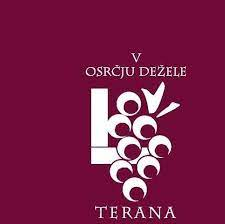

V osrčju dežele terana 2023
Ljubitelji vina, druženja in vandranja, vabimo vas na odprte kleti v osrčje dežele terana - na Kras, kjer je vedno krasno. Spoznajte in okusite Kras ob kozarcu terana in klepetu z vinarji. Doživite življenje na Krasu ob druženju na tipičnih kraških dvoriščih, »borjačih«, naših vinarjev, ki za vas odpirajo vrata. Podajte se peš ali s kolesom na raziskovanje in odkrivanje značilnosti kraške arhitekture in vasic Tomaj, Križ in Dutovlje. Na dan dogodka bo med vasmi vozil brezplačni avtobus. Letošnja 17. tradicionalna prireditev bo povezala 9 vinarjev in 3 vasi. Začela se bo z vodenim pohodom ob 10.00 uri izpred Kosovelove domačije v Tomaju. Uro kasneje, ob 11.00 uri, bodo prav tako izpred Kosovelove domačije krenili na vodeno turo kolesarji. Vseh skupaj bo ob 13.00 uri, na placu v Tomaju, pozdravila Kraška pihalna godba Sežana in mešani pevski zbor Sežana, ki bodo slavnostno naznanilo odprtje kleti po vaseh. Poleg vrhunskih vin, gostoljubja in dobrot, ki jih nudijo sodelujoči vinarji, se bodo na dvoriščih predstavljali tudi lokalni umetniški ustvarjalci in obrtniki, obiskovalci pa si bodo lahko ogledali tudi Kosovelovo domačijo v Tomaju.
